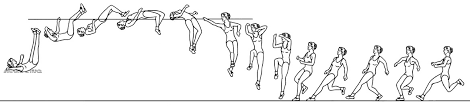

Existem dois tipos de saltos verticais, salto com vara e salto em altura. Ambos os saltos implicam
transpor uma fasquia que ]e colocada a uma altura predefinida pelos atletas mesmo antes da competição
começar. Ao longo da prova a fasquia vai aumentando aos poucos de acordo com a passagem, válida ou não, dos atletas.
- - No salto com vara (Fibra de vidro) os atletas usam uma vara longa e flexível para alcançar a fasquia,barra horizontal,
que ao longo da prova vai aumentando a sua altura. Essa progressão deve ser feita, no mínimo, de 5 em 5 centímetros.
O atleta usa a vara, sobre o chão, para ganhar altura para passar a fasquia, caindo num colchão para evitar a lesão.
Os atletas têm três tentativas para cada altura, ao fim da terceira falta o atleta está fora da prova.
- - O salto em altura é considerado um salto vertical e pode ser divido em 3 fases: posição inicial, corrida e impulsão.
